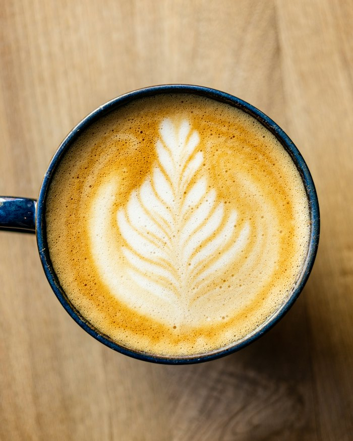
Coffee
Espresso and filter, from beans roasted in small batches.
Good coffee, honest food, and an unhurried start to your day.
View Our Menu Open every day from 7 AM
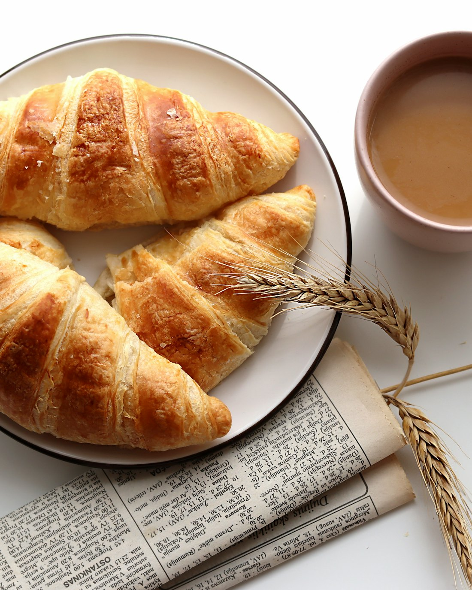
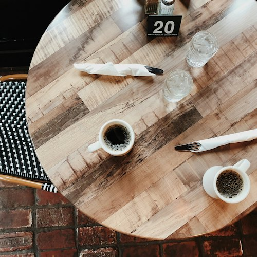
The first hour of the day sets the tone for the rest of it. We think it deserves more than a paper cup on the way to somewhere else.
AM Ritual is a place to slow down for a moment. Good coffee, made with care. Food worth sitting down for. A table by the window, and nowhere you need to be just yet. Come often enough and an ordinary morning becomes something you look forward to.
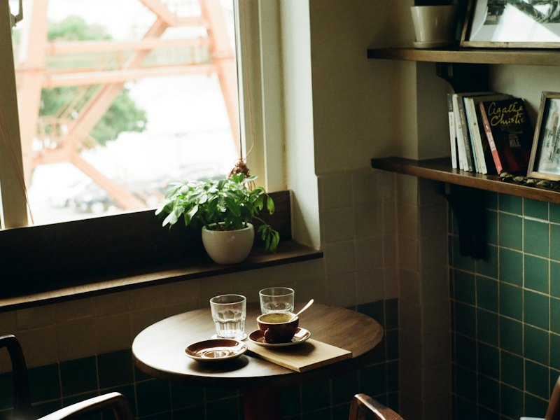
Seven o'clock, doors open. The rest tends to look like this.
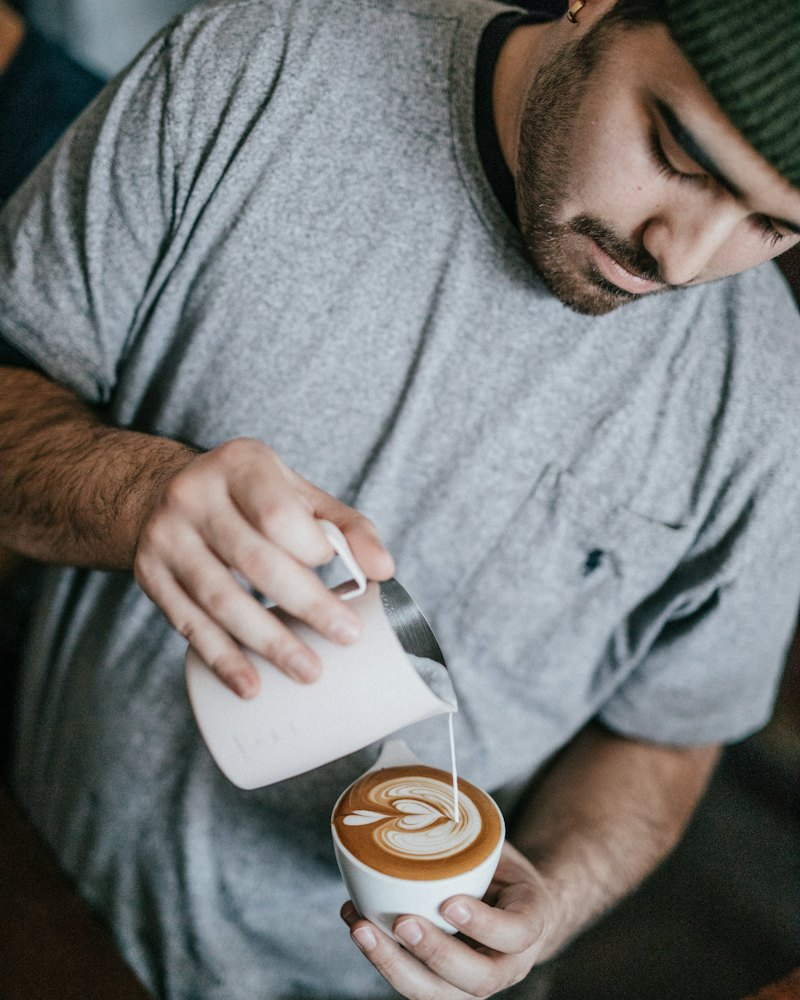
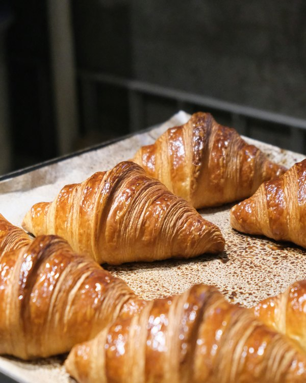
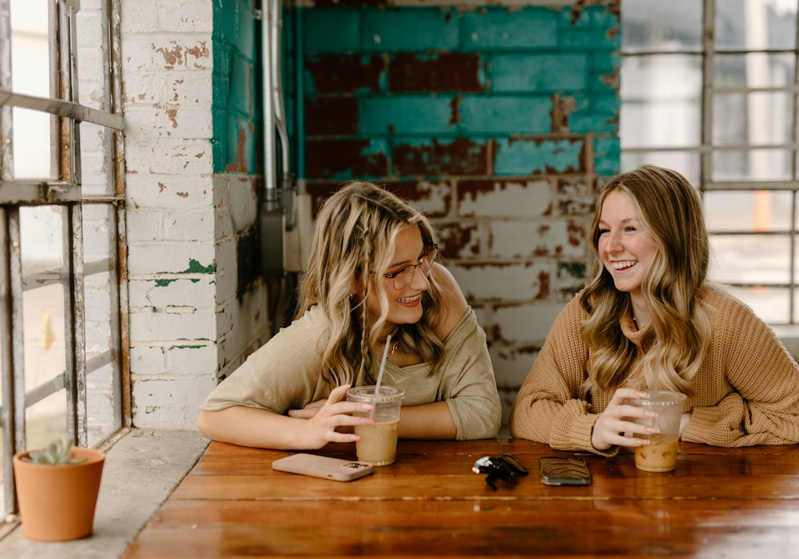
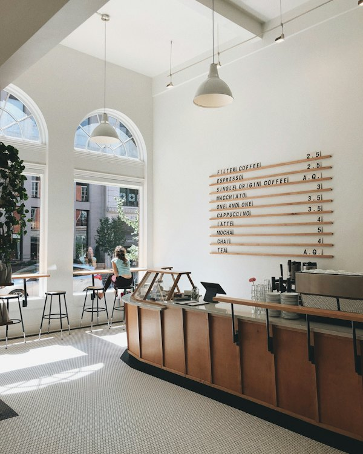
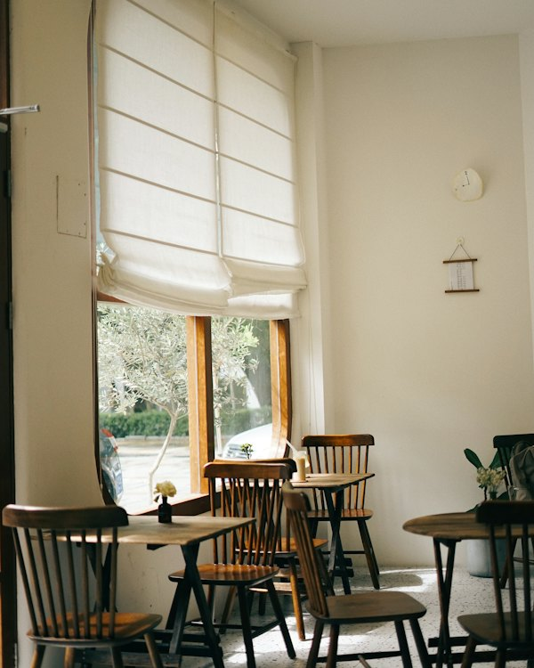
Stay as long as the coffee lasts. Then order another.
The one we are named after
Espresso · Fresh pastry · Slow mornings
Any espresso drink and any pastry, served together on a tray, and no one hurrying you along. ₱250, every day until eleven.
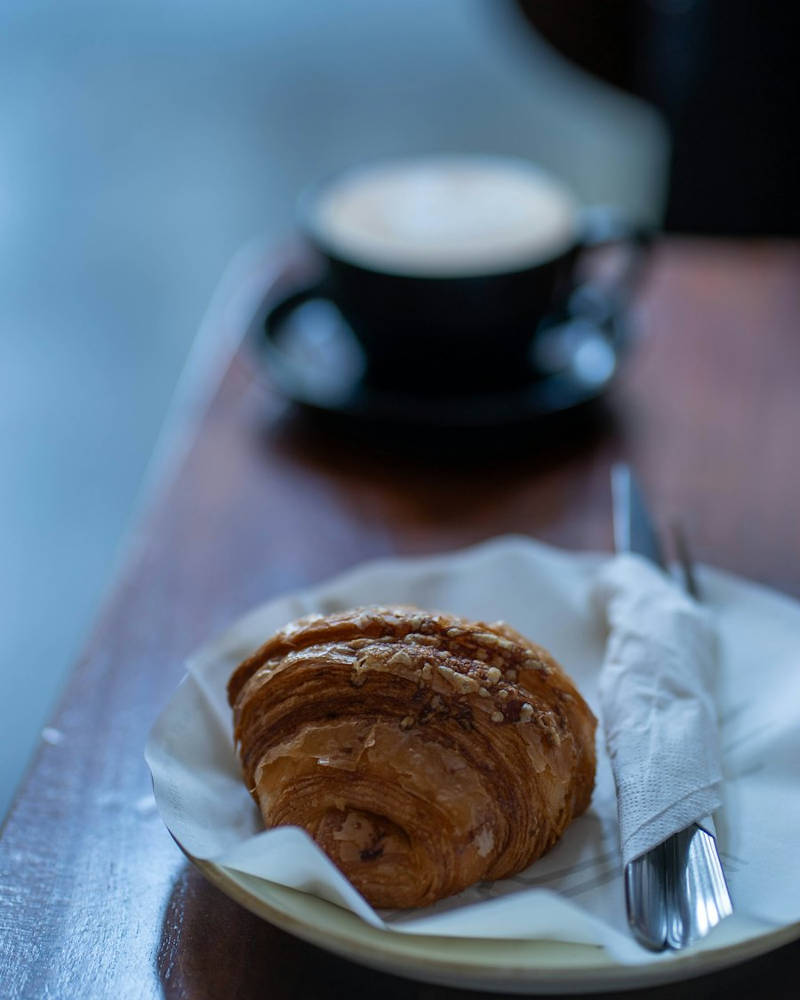
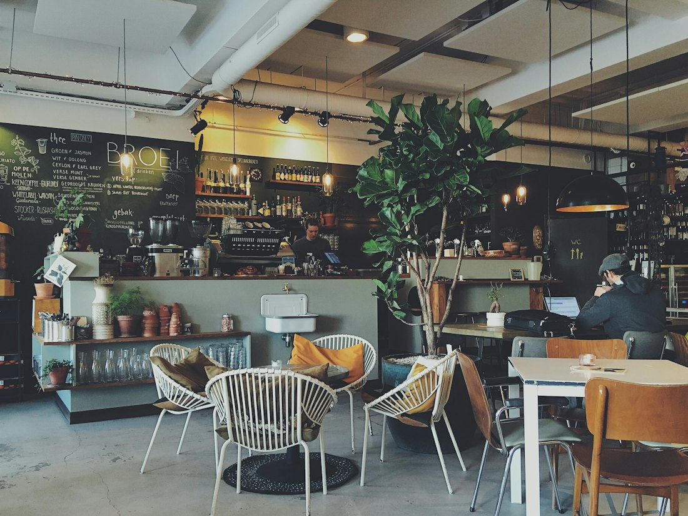
AM Ritual started with a simple habit: the same cafe, the same seat, the same first coffee of the day. Nothing special, and somehow the best part of the day. We opened this place to give that habit a home.
We'll have the coffee ready.
Sample address| Monday | 7 AM to 9 PM |
|---|---|
| Tuesday | 7 AM to 9 PM |
| Wednesday | 7 AM to 9 PM |
| Thursday | 7 AM to 9 PM |
| Friday | 7 AM to 10 PM |
| Saturday | 7 AM to 10 PM |
| Sunday | 8 AM to 8 PM |